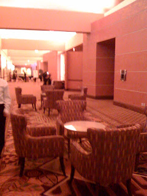

Recovered weblog entry
At the dinner

No, that's not your eyes playing tricks on you. The room was pretty
much coral throughout.

Recovered weblog entry

No, that's not your eyes playing tricks on you. The room was pretty
much coral throughout.